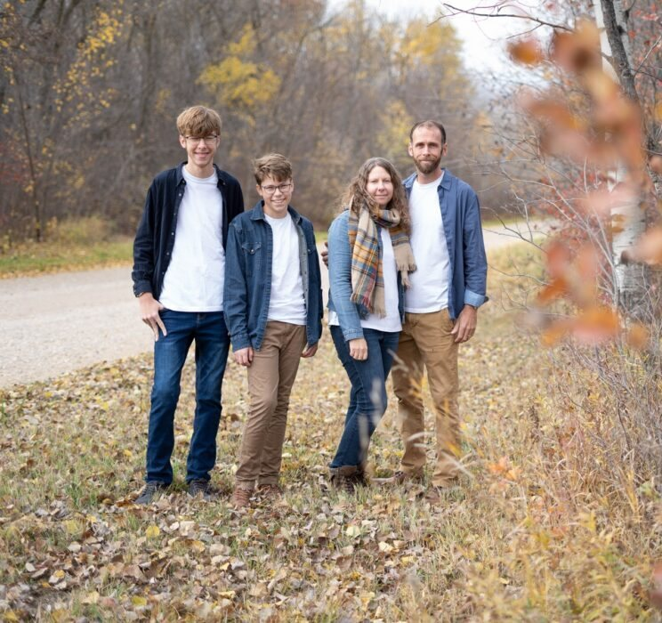
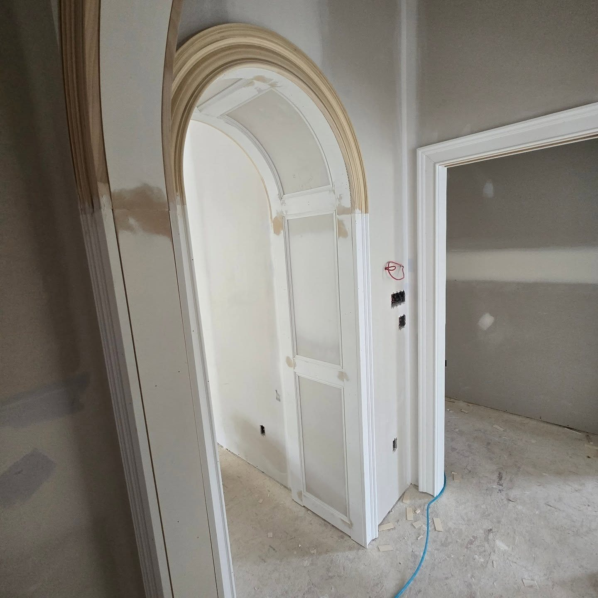
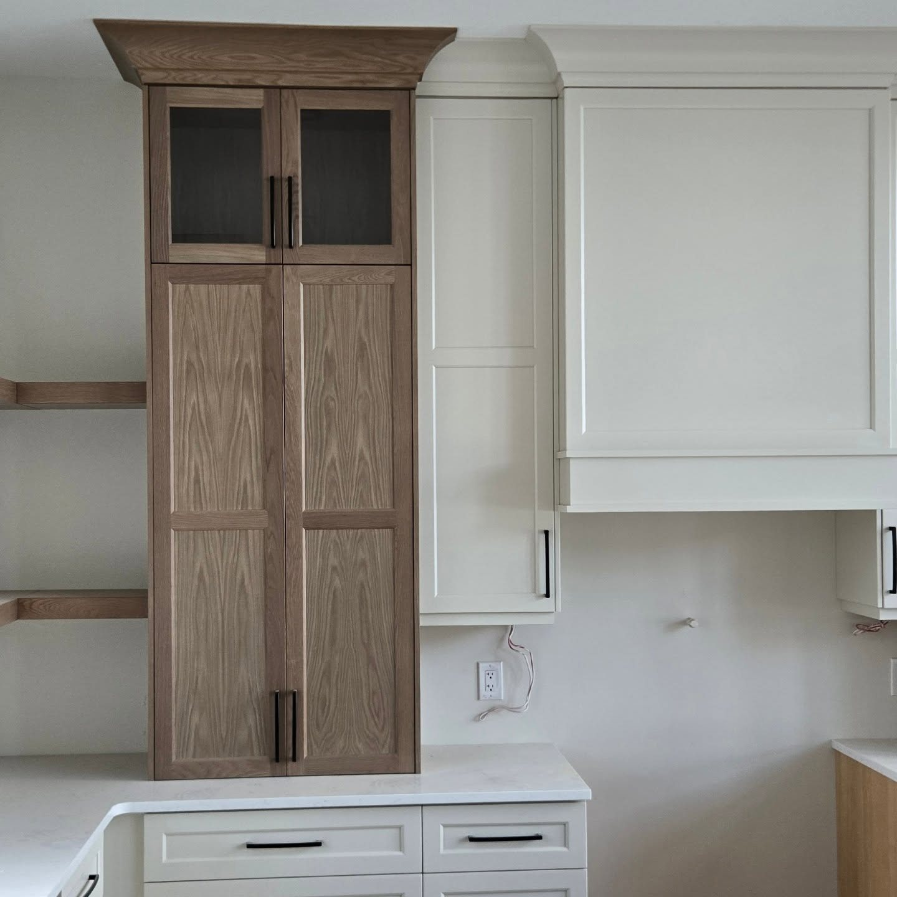
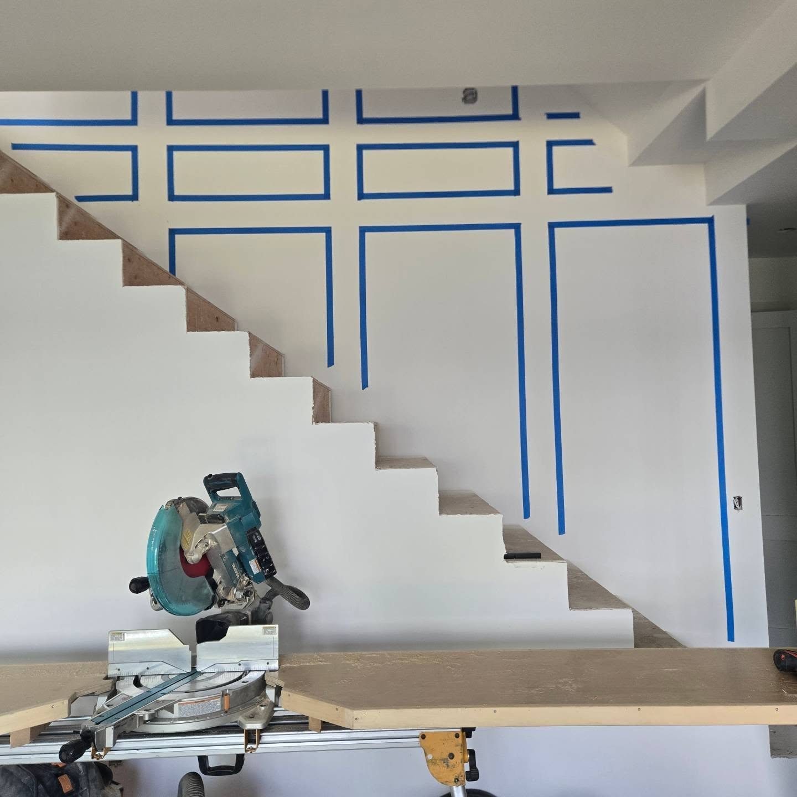
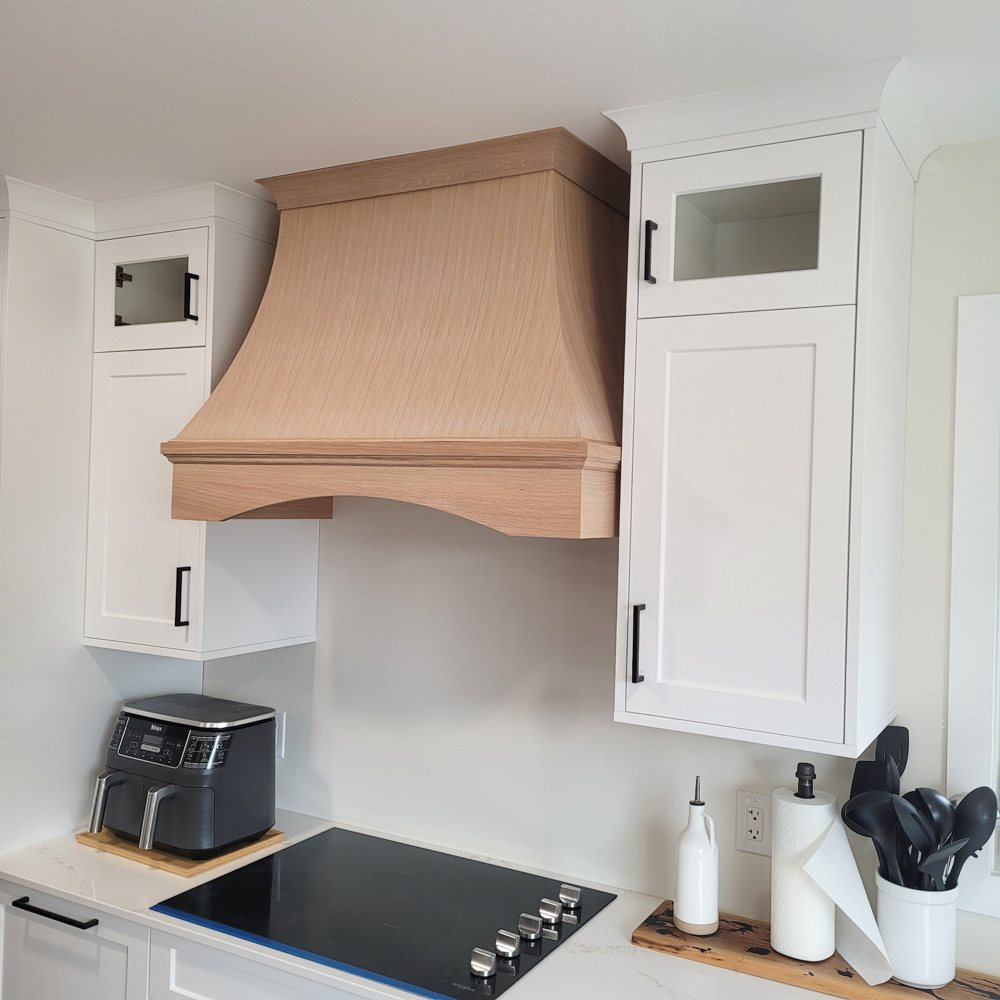

The same hands, start to finish
The person who quotes your job is the person who builds it and installs it. There is no shop blaming the site and no site blaming the drawing.
About
I have been working with wood for over a decade, in kitchen and bathroom remodelling and finish carpentry, with a lot of general construction and renovation behind that. The construction side is the part that matters most on a hard job: when something turns up behind a wall, I can solve it instead of stopping.
KLN Carpentry is a small family run business in Steinbach. That is not an apology for being small. It is the reason the person who measured your job is the person standing in your house installing it.
It has always been a privilege to help people get something they thought was too complicated or out of reach. This is one of the ways I can do that.





The person who quotes your job is the person who builds it and installs it. There is no shop blaming the site and no site blaming the drawing.
Arched openings, curved reveals, box beams, custom doors, a bookcase built to stand in for a wall. The geometry a volume trim crew says no to.
Every run is set out against the actual walls, in tape, before a saw is touched. No house is square. The work fits what is there, not what the drawing hoped for.
The KLN Standard
The person who quotes the job is the person who builds it and installs it.
Every run is set out against the actual walls, not the drawing, before a saw is touched.
No house is square, new or old. The work fits what is actually there.
A start date, a finish date, and a phone call the day anything moves.
I come back and finish the punch list. It is not an extra.
Call or text 204-392-0704. Tell me what room, what wood, and roughly when. You will get a real answer, not a brochure.